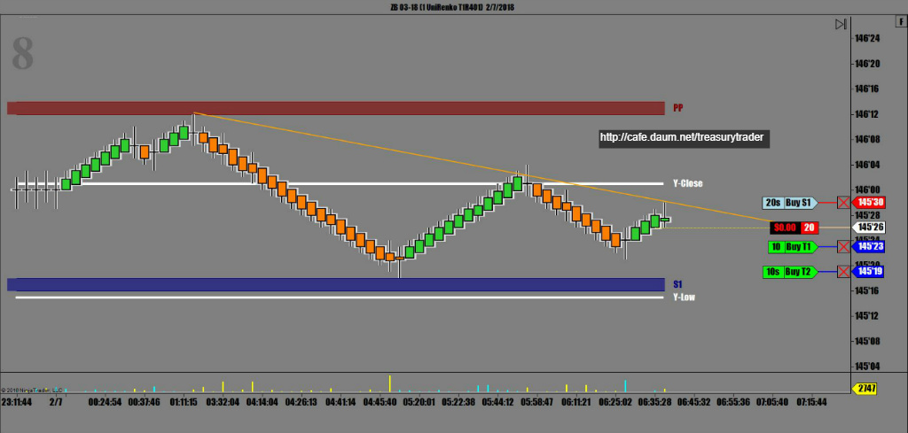
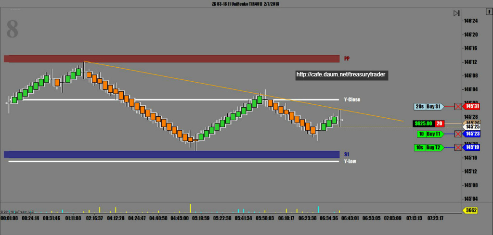
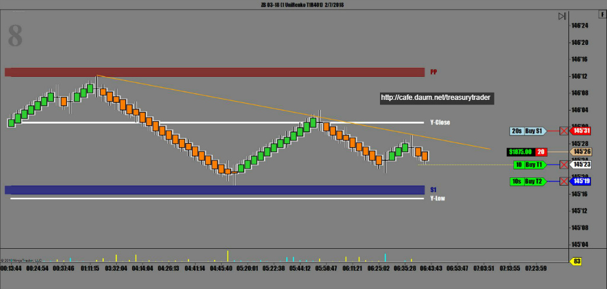
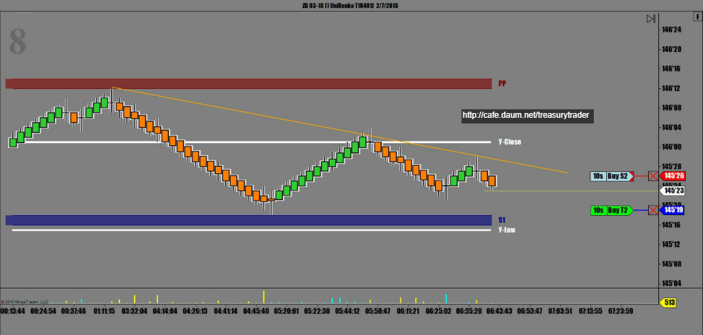
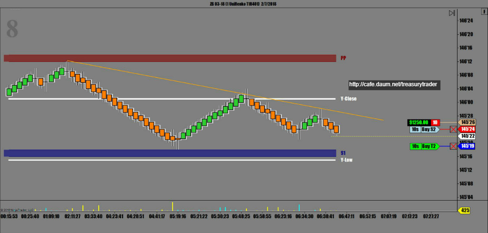
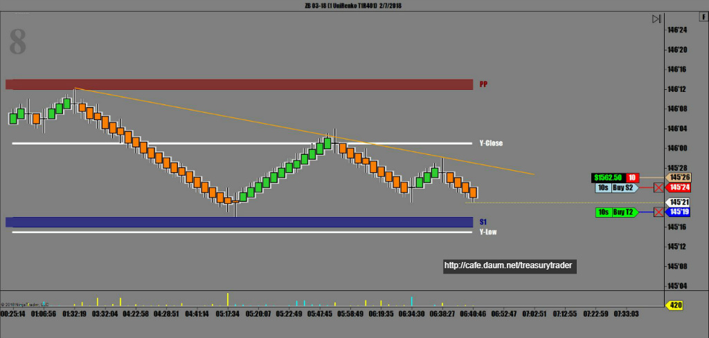
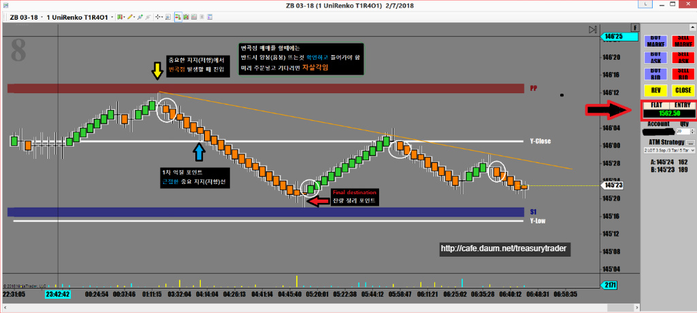

큰폭으로 스윙을 이어가던 장세는 오늘도 역시 남은 여진이 계속 되는중.
국채선물은 일단 진정국면이고 가장 큰 재료인 증시의 움직임에 따라
약하게 반응하며 진행중
현재상황은 symmetrical triangle을 만들고 있는 중
조만간 어디론가 튈 준비를 하고 있기에 매우 조심하며 매매해야 하는 상황
 2_7_2018.jpg)
오늘 증시가 상승중인지라 채권은 하락 압력이 거세고
고점하락 단기추세선에서 음봉 뜰 때 받음
근접한 오늘의 피봇 지지선까지가 목표


* 순항중

* 1차 익절 후 곧바로 손절주문 앞으로 전진배치(진입가)



매매완료
아래 챠트에 설명해 놓은것 처럼
중요한 그날의 지지(저항)에서 믿을 만한 변곡이 발생할 경우 진입
일차 익절은 근접한 지지(저항)선이 되겠고
목표가는 다음번 중요 지지(저항)선으로 잡으면 무난함
손절은 당연히 오늘 진입한 지지(저항)선 한틱 위.
아래 챠트에서 보는것처럼 국채선물매매에 있어서 피봇은 신뢰도가 거의 80% 이상되는 중요한 지표임
거기에 오늘의 VWAP을 함께 쓰면서 전일 종가,저가,고가를 조합하면 다른 어떤 지표도 필요없는
거의 완벽한 매매챠트가 됨

오늘 매매수익 $1,562.50
오늘매매 세줄요약
* Symmetrical Triangle formation 발생, 주의하며 관망
* 단기추세선에서 저항받고 음봉출현에 진입
* 짧게먹고 치고 빠지기 전법 성공
매매기법 - 중요 피봇 지지(저항)에서 발생한 변곡점 매매